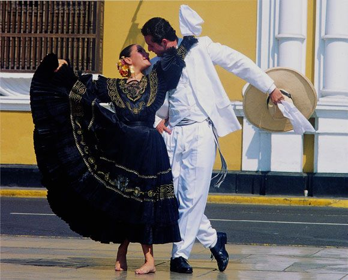
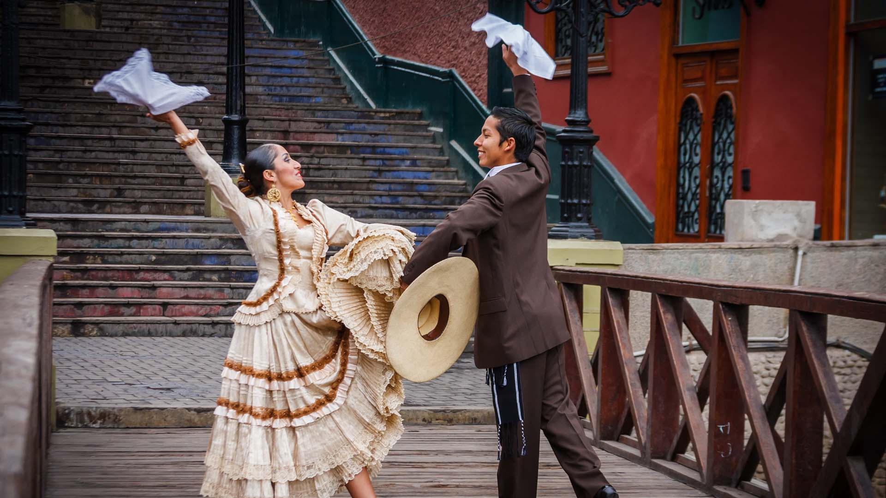

En BRISAS DEL TITICACA celebramos la riqueza cultural del Perú. Somos un colectivo apasionado por las danzas tradicionales que conecta la costa, la sierra y la selva. Nuestro propósito es difundir nuestra herencia y unir generaciones a través del arte.

